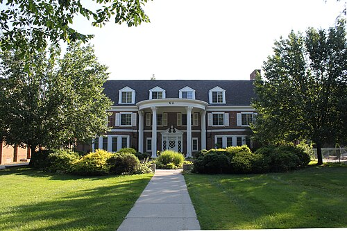

Overview
Chi Omega was established on April 5, 1895, at the University of Arkansas. The fraternity is affiliated with the National Panhellenic Conference and operates on a national scale in the United States.
The organization's official colors are cardinal and straw. Its flower is the white carnation, its mascot is the owl, and its official jewels are the pearl and diamond. The skull and crossbones also serves as one of Chi Omega's official symbols. The fraternity's official publication is The Eleusis.
Chi Omega's national philanthropy is the Make-A-Wish Foundation. Its national headquarters are located in Memphis, Tennessee.
History
Chi Omega was founded on April 5, 1895, at the University of Arkansas. Its founders were Ina May Boles, Jean Vincenheller, Jobelle Holcombe, and Alice Simonds. They established the organization with the assistance of Dr. Charles Richardson, who was a member of Kappa Sigma fraternity.
The original chapter at the University of Arkansas became known as the Psi chapter. The organization was founded around principles that include friendship, personal integrity, service to others, academic and intellectual achievement, participation in campus and community life, and personal and career development.
Chi Omega began expanding beyond the University of Arkansas in 1898. New chapters were established at Transylvania University in Lexington, Kentucky, and at Hellmuth Ladies' College in London, Ontario. Both of these early chapters were later transferred to other institutions.
In 1903, Chi Omega joined the National Panhellenic Conference, an organization that represents many women's fraternities and sororities in the United States. Expansion continued rapidly. By the organization's tenth anniversary in 1905, Chi Omega had established seventeen chapters throughout the United States.
Although Chi Omega is an organization for women, it formally refers to itself as a women's fraternity rather than a sorority. Over the course of its history, hundreds of thousands of women have been initiated into the organization.
Symbols and Traditions
Crest and Badge
Chi Omega adopted its official crest in 1902. The design includes a white carnation at its center, positioned between the Greek letters Chi (Χ) and Omega (Ω). Additional imagery includes an owl and the skull and crossbones. Greek letters also appear beneath the carnation, and the overall design is surrounded by a laurel wreath.
The official Chi Omega badge was standardized several years later in 1906. Dr. Charles Richardson designed the first version of the badge using pieces of hammered dental gold.
The badge combines the Greek letters Chi and Omega into a monogram. Pearls or diamonds decorate the design. Traditionally, the badge is worn over the heart with professional clothing. Chi Omega also has a separate new-member pin featuring the Greek letters ΧΩ.
Colors, Flower, and Mascot
Chi Omega's official colors are cardinal and straw. The organization's official flower is the white carnation, while the pearl and diamond are its official jewels.
The owl serves as Chi Omega's official mascot and is one of the symbols most commonly associated with the organization. The skull and crossbones is another recognized symbol of the fraternity and appears within the official crest.
Publications and Traditions
The Eleusis has served as Chi Omega's official magazine since 1899. Its name is connected to Greek mythology and the organization's patron Greek deity, Demeter.
Chi Omega also historically published a private magazine called Mystagogue during the early twentieth century.
Another important part of Chi Omega tradition is the Chi Omega Symphony. Ethel Switzer Howard, a member of the Xi chapter at Northwestern University, composed the Symphony in 1904. The document expresses values and ideals associated with membership in the organization.
Activities
Philanthropy
During the late 1990s, Chi Omega began researching opportunities to establish a partnership with a national charitable organization. This process eventually led to the selection of the Make-A-Wish Foundation.
Make-A-Wish became Chi Omega's official national philanthropy in 2002. The organization grants wishes to children facing critical illnesses, and Chi Omega collegiate and alumnae members support its mission through fundraising and volunteer service.
Since establishing the partnership, Chi Omega members have contributed millions of dollars and extensive volunteer hours to Make-A-Wish. Individual collegiate chapters also organize philanthropy events within their communities to support the organization.
Leadership Institute
Chi Omega also provides leadership and personal development opportunities through the Nancy Walton Laurie Leadership Institute.
The institute provides training for both collegiate and alumnae members. Programs address topics related to leadership and personal development and may be offered at different Chi Omega meetings and events.
The Chi Omega Foundation supports the Leadership Institute and other educational programs associated with the fraternity.
Governance
Chi Omega is governed nationally by a council consisting of elected alumnae members. These volunteers oversee the organization's national operations and provide leadership for the fraternity.
Members of the governing council are elected on a regular cycle. The national organization works with collegiate chapters, alumnae chapters, advisers, and other volunteers throughout the country.
Chi Omega's national headquarters are located in Memphis, Tennessee. The headquarters supports the organization's chapters and manages national programs, membership services, leadership initiatives, and other administrative functions.
Chapters
Since its founding at the University of Arkansas, Chi Omega has expanded to colleges and universities throughout the United States. The original chapter is known as the Psi chapter.
Chi Omega currently maintains more than 180 active collegiate chapters as well as a large network of alumnae chapters. Collegiate chapters operate at individual colleges and universities while remaining connected to the national organization.
Alumnae chapters provide opportunities for members to remain involved after graduating from college. These groups may participate in social events, community service, philanthropy, mentoring, and support for collegiate chapters.

Local Chapter and Member Misconduct
Like many large collegiate organizations, individual Chi Omega chapters and members have faced controversies during the fraternity's history.
In 1971, the Delta Pennsylvania chapter at Dickinson College attempted to recruit an African American woman. After the national organization did not permit the chapter to extend membership, the local chapter separated from the national organization and became an independent sorority.
In 2013, a Chi Omega chapter at Pennsylvania State University was closed following controversy surrounding a party that included offensive stereotypes of Mexican-American culture. National Chi Omega leadership stated that the event did not reflect the values and purposes of the organization.
During 2013 and 2014, allegations of racial discrimination during sorority recruitment at the University of Alabama involved several Greek organizations, including Chi Omega. Students and members raised concerns that Black prospective members had been prevented from receiving membership offers. The controversy contributed to broader discussions and demonstrations concerning integration within Greek life at the university.
A separate incident occurred at the University of Central Florida in 2014, when a Chi Omega chapter was suspended following allegations of hazing involving alcohol. Members directly associated with the incident later resigned from the organization.
Also in 2014, a member of the University of Alabama chapter was removed from the organization after posting a racially offensive image on social media. Both university officials and Chi Omega leadership publicly condemned the post.
In 2016, another membership controversy occurred at the University of Nebraska Omaha after a member said she had been removed from Chi Omega in connection with photographs on her Tinder profile. The dispute later received national media attention.
Notable Members
Throughout its history, Chi Omega has included members who have become notable in fields such as government, entertainment, business, journalism, education, athletics, and philanthropy.
A separate Wikipedia article maintains a larger list of notable Chi Omega members and their accomplishments.